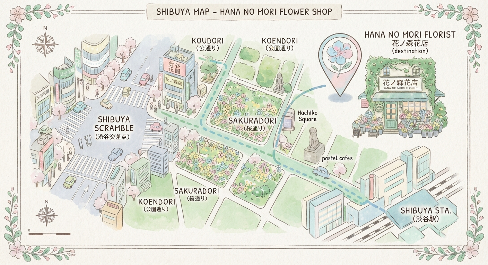

.png) SHIBUYA GRAND FLORIST
SHIBUYA GRAND FLORIST
SHIBUYA GRAND FLORIST
SHIBUYA GRAND FLORIST
A Floricultura está localizada proxima ao metro central de Shibuya
Nosso espaço foi escolhido para proporcionar aos clientes aromas,memorias,atendimento de qualidade e claro ser referencia no mercado.

Você pode chegar à pousada utilizando transporte público, carro ou aplicativos de transporte.